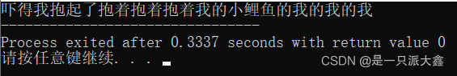
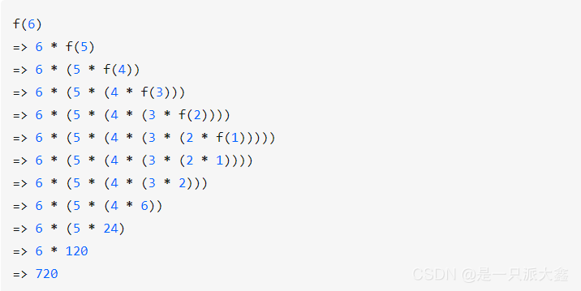

Algorithm_in_C(1)
基于C的算法深入学习
第一篇：小引
为了更好的学习算法，我们有必要采取一些简单的数学复习。
指数
对数
在计算机科学中，我们有必要反复强调，所有的对数都是以二为底的。
而在数学上，我们如是定义对数：$X^A = B$，于是$\log_X^B=A$
当然基于此，我们还有其他的公式：
1.$\log A/B = \log A-\log B$
2.$\log(A^B)=B\log A$
3.$\log X < X$
级数
什么是级数呢？一些列数字的从1 至 i 的和记作$a_i$，于是下面是一个最简单的级数求和公式
为了强调通用性，我们还给出这个公式：
于是，当$0 < A < 1$下，就会得到该级数收敛的结果
定义模运算
如果我们说: 一个整数$N$整除$A-B$，也就记作有：$A\equiv B(\mod N)$
简单的递归阐述
递归在数据结构与算法中被大量的使用。我们来看一个小例子：$C = 5\times(F-32)/9$。我们书写一个函数来求之给定一个华氏度下的摄氏度求法。
任何一个C程序员可以马上给出：（为了从简我们使用int ）
int F(int x){
return 5*(F-32)/9;
} 那使用递归呢？
int F(int x){
/*给出退出条件*/
if( X == 0 )
return 0;
else
return 2*F(X-1) + X*X;
} 什么意思？当我们没有办法给出一个直达结果的程序代码，而是只知道两者联系的时候，使用递归可以是很好的解决办法
上面的代码，只考虑了第$I-1$摄氏度和第$I$摄氏度关系，一直调用函数直到函数的形参为0 时停止调用，将值一级一级返回至最初的调用点。
注意——书写函数的时候应当妥善的处理推出条件，估计到自己的递归能不能成功退出递归条件。比如说
/*Unsuccessful recursion!*/
int someFunc(unsigned int N){
if(N == 0){
return 0;
}
else
{
return someFunc(N/3 + 1) + N - 1;
}
} 上面的结果，除了 0 之外，都无法算出结果，代价是程序的空间将会被占满直到计算机崩溃为止。
Extensive Reading
原文链接：https://blog.csdn.net/weixin_44572229/article/details/119909728
1.什么是递归？
什么是递归呢? 要理解递归，就得先了解什么是递归，实际上这句话就是一个递归。这么说可能不好理解，接下来我举个简单的例子来解释这段话的意义。
如果不了解递归，那就先了解什么是递归。嗯？那我再说一遍：如果不了解递归，那就先了解什么是递归。，好像死循环了！可能你会说这是个循环并不是递归，我们前面说到，递归是需要终止条件的，那么你明白递归是什么其实就是终止条件。整个过程，搜索引擎充当递归函数(只是形象的假设)。在你去依次查找递归/栈/内存/操作系统的过程为前行阶段，在你都了解完之后，反回去了解含义的过程为退回阶段。如果还是不太清楚，可以接着看下面的例子。
实际上这张图就很形象地表达出了递归，这句吓得我抱起了抱着抱着抱着我的小鲤鱼的我的我的我如果从字面意义上看可能看不出是什么意思，那么我们可以通过代码来实现同样的效果:
void recursion(int n){
std::cout<<"抱着";
if(!n){
std::cout<<"我的小鲤鱼";
}
else{
recursion(n-1);
}
std::cout<<"的我";
return;
}
int main(){
std::cout<<"吓得我抱起了";
recursion(2);
return 0;//完结撒花～
}
2.递归的思想
递归的基本思想是某个函数直接或者间接地调用自身，这样原问题的求解就转换为了许多性质相同但是规模更小的子问题。求解时只需要关注如何把原问题划分成符合条件的子问题，而不需要过分关注这个子问题是如何被解决的。
递归有三大要素
第一要素：明确你这个函数想要干什么
对于递归，我觉得很重要的一个事就是，这个函数的功能是什么，他要完成什么样的一件事，而这个，是完全由你自己来定义的。也就是说，我们先不管函数里面的代码什么，而是要先明白，你这个函数是要用来干什么。
例如，我定义了一个函数
// 算 n 的阶乘(假设n不为0)
int f(int n){
} 这个函数的功能是算 n 的阶乘。好了，我们已经定义了一个函数，并且定义了它的功能是什么，接下来我们看第二要素。
第二要素：寻找递归结束条件
所谓递归，就是会在函数内部代码中，调用这个函数本身，所以，我们必须要找出递归的结束条件，不然的话，会一直调用自己，进入无底洞。也就是说，我们需要找出当参数为啥时，递归结束，之后直接把结果返回，请注意，这个时候我们必须能根据这个参数的值，能够直接知道函数的结果是什么。
例如，上面那个例子，当 n = 1 时，那你应该能够直接知道 f(n) 是啥吧？此时，f(1) = 1。完善我们函数内部的代码，把第二要素加进代码里面，如下
// 算 n 的阶乘(假设n不为0)
int f(int n){
if(n == 1){
return 1;
}
} 有人可能会说，当 n = 2 时，那我们可以直接知道 f(n) 等于多少啊，那我可以把 n = 2 作为递归的结束条件吗？
当然可以，只要你觉得参数是什么时，你能够直接知道函数的结果，那么你就可以把这个参数作为结束的条件，所以下面这段代码也是可以的。
// 算 n 的阶乘(假设n>=2)
int f(int n){
if(n == 2){
return 2;
}
} 注意我代码里面写的注释，假设 n >= 2，因为如果 n = 1时，会被漏掉，当 n <= 2时，f(n) = n，所以为了更加严谨，我们可以写成这样：
// 算 n 的阶乘(假设n不为0)
int f(int n){
if(n <= 2){
return n;
}
}第三要素：找出函数的等价关系式
第三要素就是，我们要不断缩小参数的范围，缩小之后，我们可以通过一些辅助的变量或者操作，使原函数的结果不变。
例如，f(n) 这个范围比较大，我们可以让 f(n) = n * f(n-1)。这样，范围就由 n 变成了 n-1 了，范围变小了，并且为了原函数f(n) 不变，我们需要让 f(n-1) 乘以 n。
说白了，就是要找到原函数的一个等价关系式，f(n) 的等价关系式为 $n\times f(n-1)$.
举个栗子，还是从阶乘来出发
假设我们用递归来算阶乘 f(n)
f = n =>
n === 1 ? 1
: n * f(n-1) f 里面用到了 f，怎么理解呢？
很简单，把式子展开即可：

看到递归了吗？
先递进，再回归——这就是「递归」。
3.递归的缺点
递归的缺点，从上图我们可以看出
在程序执行中，递归是利用堆栈来实现的。每当进入一个函数调用，栈就会增加一层栈帧，每次函数返回，栈就会减少一层栈帧。而栈不是无限大的，当递归层数过多时，就会造成 栈溢出 的后果。
显然有时候递归处理是高效的，比如归并排序；有时候是低效的，比如数孙悟空身上的毛，因为堆栈会消耗额外空间，而简单的递推不会消耗空间。
4.递归的程序特性
优雅性
相比其他解法（比如迭代法），使用递归法，你会发现只需少量程序就可描述出解题过程，大大减少了程序的代码量，而且很好理解。递归的能力在于用有限的语句来定义对象的无限集合。
反向性
由于递归调用程序需要维护调用栈，而栈（我们在上文提过）具有后进先出的特征，因此递归程序适合满足取反类需求。我们在第五部分有一些编程实践，比如字符串取反，链表取反等相关有趣的算法问题。
递推关系
递归程序可以较明显的发现递推关系，反过来也可以这么说，具有递推关系的问题基本都可以通过递归求解（当然也许有性能更佳的解法，但递归绝对是一种选择）。递推关系常见问题有杨辉三角、阶乘计算
5.什么时候用递归
说了那么多，那么我们什么时候可以用、应该用递归呢？
具有以下特征的问题可考虑递归求解：
当问题和子问题具有递推关系，比如杨辉三角、计算阶乘（后文讨论）。
具有递归性质的数据结构，比如链表、树、图。
反向性问题，比如取反。
总结下来，最根本的还是要抓住问题本身是否可以通过层层拆解到最小粒度来得解。
6.递归总结
现在，我们更加相信递归是一种强大的技术，它使我们能够以一种优雅而有效的方式解决许多问题。同时，它也不是解决任务问题的灵丹妙药。由于时间或空间的限制，并不是所有的问题都可以用递归来解决。递归本身可能会带来一些不希望看到的副作用，如栈溢出。
有时，在解决实际问题时乍一看，我们并不清楚是否可以应用递归算法来解决问题。然而，由于递归的递推性质与我们所熟悉的数学非常接近，用数学公式来推导某些关系总是有帮助的，也就是说写出递推关系和基本情况是使用递归算法的前置条件。
只要有可能，就应用记忆化。在起草递归算法时，可以从最简单的策略开始。有时，在递归过程中，可能会出现重复计算的情况，例如斐波纳契数（Fibonacci）。在这种情况下，你可以尝试应用 Memoization 技术，它将中间结果存储在缓存中供以后重用，它可以在空间复杂性上稍加折中，从而极大地提高时间复杂性，因为它可以避免代价较高的重复计算。
当堆栈溢出时，尾递归可能会有所帮助。
使用递归实现算法通常有几种方法。尾递归是我们可以实现的递归的一种特殊形式。与记忆化技术不同的是，尾递归通过消除递归带来的堆栈开销，优化了算法的空间复杂度。更重要的是，有了尾递归，就可以避免经常伴随一般递归而来的堆栈溢出问题，而尾递归的另一个优点是，与非尾递归相比，尾部递归更容易阅读和理解。这是由于尾递归不存在调用后依赖（即递归调用是函数中的最后一个动作），这一点不同于非尾递归，因此，只要有可能，就应该尽量运用尾递归。
第二篇：简单的算法分析
时间复杂度
我们分析算法，首先需要衡量的就是一个算法的时间复杂度，问题来了，啥是时间复杂度嘞？答案是：我跑完这个算法的时间相对于数量级的最高幂数。抽象！人话就是：对于同一套数据处理之，它快不快？
还是没大懂，究竟是什么？
先来思考一个问题：你怎么衡量一个算法的速度的？很简单，扔进一个程序性能分析器，看他跑完我这个模块的时间呗！基于此的，我再问你，你这个算法，和我这个算法，给出10个数据处理，和给1000000000000000000个数据处理，时间一样嘛？显然不一样！我的算法处理1000000000000000000个数据，和你的算法处理10个数据，显然往往后这快！但是，如果我们两个都去处理1000000000000000000个数据，这就不好说了。于是——
时间复杂度正是对于给定一套数量级的数据，该算法相对于这个数量级的数据的运算时间表现。
$O(f(N))$
但是，这一时间并不好精确的衡量，我们于是引入下面四个重要的定义式子：他们将分别衡量——算法运行的最大期望时间，最小的期望时间。
首先，这是我们在学习工作中描述算法时间复杂度用的最普遍的符号shi 。它是渐进上界，其作用是将我们得到的算法在最坏情况下（worst case）时间复杂度表达式简化成对应的多项式（比如n^2等）。所以在我们证明的过程中，目的是证明我们的式子要“小于等于”目标多项式。
$\Omega(f(N))$
这个符号我们一般用的比较少，一个是因为我们一般不会去考虑算法运行时间的下界，另一个是因为下界时间也不好证明。没错，他就是渐进下界，其作用是将我们得到的算法在最好情况下（best case）时间复杂度表达式简化成对应的多项式（也比如n^2等）。所以在我们证明的过程中，目的是证明我们的式子要“大于等于”目标多项式。
$\Theta(g(N))$
如果O和Ω可以用同一个多项式表示，那么这个多项式就是我们所要求的渐进紧的界了。其作用是将我们可以较准确地得到算法的时间复杂度表达式对应的多项式（也比如n^2等）。所以在我们证明的过程中，目的是证明我们的式子要“等于”目标多项式。
各项算法的差异
常见的时间复杂度如下所示：
1.O(1) — 常数复杂度
2.O(log n) — 对数复杂度
3.O(n) — 线性复杂度
4.O(n log n) — 对数线性复杂度
5.O(nᵏ) — 多项式复杂度
6.O(kⁿ) — 指数复杂度
7.O(n!) — 阶乘复杂度
下图描绘了各种复杂度的算法中，当输入规模增长时，操作数量（运行时间）的变化趋势。

你可以看到，随着输入规模的增长，红色阴影区域中算法的运行时间急剧增长。另一方面，在黄色和绿色阴影区域中的算法，当输入规模增长时，运行时间在变化不是很大，因此它们更高效，处理大量数据时更游刃有余。
最后需要指明的一点，大 O 表示法通常用于描述当输入规模变得非常大时，算法呈现的「显著趋势」。因此，大的显著趋势会盖过一些小的细枝末节的趋势。例如，我们实际测算得到时间复杂度为 O(n²+ n) 的算法会简化为 O(n²)，原因是随着 n 变得非常大时， n² 这一项的显著性远远盖过了 n 这一项的显著性。
下面给出一些例子：
int i = 0;
i ++; // 简单的操作
int arr[100] = {0};
i = arr[99];
// pretend that we import the hashTable
table.search(i); // 常数时间操作 无论传递给这些函数的哈希表有多大，它们用同等的时间来完成（只有一步操作）。
O(log n) — 对数复杂度
典型的对数复杂度算法是二分搜索算法。这是一种用于在有序数组中查找特定值的算法，它不断迭代读取当前范围的中间值，判断目标值是小于还是大于中间值，排除不包含目标的那一半内容。下面是它的一种实现：
typedef int Index; #define UNFIND -1; Index binSearch(int arr[],int arrSize,int target) { // make some check here... // ... // end check int left = 0; int right = arrSize - 1; while(left <= right) { int middle = left + (right - left) >> 1; // actually make middle,but this way we could effectively prevent overflowing if(middle = target) { return middle; } else if(arr[middle] < target){ left = middle + 1; } else { right = middle - 1; } } // the while break, means that we could not find the target, while loop break. return UNFIND; }
由于每次迭代，待搜索的数组长度会减半。因此哪怕搜索的数组长度翻了一倍，也只需多迭代一次！因此，随着数组长度的增加，运行时间将呈对数增长。
O(n) — 线性复杂度
线性复杂度算法往往在连续迭代数据结构时涉及到。参考先前的对数搜索示例，在数组中搜索值可以用（效率较低）的线性时间来进行，这里还是采取链表的搜索吧！
typedef int Index; #define UNFIND -1; /*pretend that we define a linklist contains integers*/ Index FindElem(LinkList list, int target) { LinkNodePtr cur; Index inPos = 0; while(cur != NULL){ if(cur->data == target){ return inPos; } inPos++; cur = cur->next; } }
显然，随着输入链表大小的增加，由于需要检查列表中的每个项目，最坏情况下找到目标所需的循环迭代次数的增长与输入列表的大小增长成正比。
O(n log n) — 对数线性复杂度
列举对数线性复杂度算法的示例会比之前难一些。顾名思义，它们同时包含对数和线性部分。其中最常见的示例是排序算法。有一个算法叫「归并排序」，它用迭代手法将数组分成一小块一小块，对每小块进行拆分、排序，然后再按顺序重新将各个小块合并在一起。通过图像可以更容易看明白，因此我将
 省略代码的实现。
省略代码的实现。
O(nᵏ) — 多项式复杂度
在这里，我们开始着手研究时间复杂度较差的算法，通常应尽可能避免使用它（请参考上文的图表，我们正处于红色区域！）。但是，许多「暴力」算法都属于多项式复杂度，可以作为帮助我们解决问题的切入点。
long long Feb(int pos){
if(pos <= 2){
return 1;
}
return Feb(pos -1) + Feb(pos - 2);
} 在上面的示例中，每当输入 n 增加 1 时，执行的操作数量就会翻倍。这是因为我们没有缓存每个函数调用的结果，所以必须从最开始重新计算所有先前的值。因此，该算法的时间复杂度为 O(2ⁿ)。
O(n!) — 阶乘复杂度
最后但同样重要（但肯定是效率最低）的类型是阶乘时间复杂度的算法。通常应避免这中复杂度，因为随着输入规模的增加，它们会很快变得难以运行。这种算法有一个示例，那就是旅行推销员问题的暴力解法。这个问题是希望找到一条最短路径，要求该路径必须访问坐标系中的所有点，并最终回到起点。暴力解法涉及相互比较所有可能的路线（读作：排列组合）并选择最短的。请注意，除非要访问的点数很少，否则这通常不是解决此问题的合理方法。
简单的计算时间表达式
时间复杂度可以由时间表达式给出。来看一个很简单的小例子：
int getSumCube(int N){ int i, PartialSum; PartialSum = 0; for(i = 1; i <= N;i++){ PartialSum += i*i*i; } return PartialSum; } 我们扫描了一遍大小为N的数组，于是可以给出这个式子的时间表达式是：
计算时间的一般简单法则：
1.
for循环一次
for循环的时间是for循环的次数乘上for 循环次数2.嵌套的
for循环自内向外的做1 的分析，一般来讲是带有乘上几层for循环的。
3.顺序语句
直接求和即可
4.
if/else语句不会超过判断时间 + 较长者分支时间。
一些问题导览
最大的子序数列和问题
问题是这样的：给定整数序列$\{A_i\}$我们需要求出：$\sum_{k = i}^j$作为这数列的一个子数列的和的最大值的问题。
最简单的，我们来回扫描嘛！
int MaxSequenceSum(const int A[],int N)
{
int thisSum,Maxsum,i,j,k;
for(i = 0; i < N; i++){
for(j = 0; j < N; j++){
thisSum = 0;
for(k = 1; k <= j; k++){
ThisSum += A[k];
}
if(ThisSum > MaxSum){
MaxSum = thisSum;
}
}
}
return MaxSum;
} 于是，精确的来讲，我们需要花费的时间表达式是：
但是，这样的算法一旦数据量大起来，就会寄。
那就优化一下！
int MaxSequenceSum(const int A[],int N)
{
int thisSum,Maxsum,i,j;
MaxSum = 0;
for(i = 0; i < N; i++)
{
thisSum = 0;
for(j = i; j < N; j++)
{
ThisSum += j[k];
if(ThisSum > MaxSum)
{
MaxSum = thisSum;
}
}
}
return MaxSum;
} 还有其他方法嘛？有的！
其他方法
（1）原文链接：https://blog.csdn.net/weixin_44507219/article/details/128245726
最大子序列求和是指给定一组序列，求所有连续子序列的和中的最大值，例如给定数列：
[5,-2,-5,6]最大子序列和是6；[1, 2, -3, 4, -5, 6, 7, 8, -9, 10]最大子序列和是22；
下面将利用几种不同的算法来解决此问题，重要的是理解不同算法中所代表的思想
1、穷举法
穷举法的思想比较简单，它是指列举所有的可能，来得到问题最终的解；
在此问题中，可以利用穷举法将所有的子序列的和计算出来，来得到最大子序列的和；
假设子序列的起点为i，那么i的范围在数组下标中可以是:[0,arrays.length-1]；
针对起点为i的子序列，由于子序列是连续的，那么它的终点的范围是[i,arrays.length-1]；
最后我们需要对[i,j]的子序列进行求和，并把结果每次与max比较，以此得到最大子序列和max；
//穷举法，时间复杂度为O(N^3)
public static int method_1(int[] arrays) {
int max = 0;
//每个子序列的起点 = i
for (int i = 0; i < arrays.length; i++) {
//每个子序列的终点 = j
for (int j = i; j < arrays.length; j++) {
int sum = 0;
//子序列求和
for (int k = i; k <= j; k++) {
sum = sum + arrays[k];
}
//当出现子序列和大于max，用sum替换掉max
if (sum > max) {
max = sum;
}
}
}
return max;
}2、穷举优化
显然，上面算法的时间复杂度O(N^3)并不能让人满意，不过我们可以简单优化一下：
列举所有的子序列[i,j]依然不变，但是针对子序列[i,j]求和，我们完全可以省略这一步，当固定起点i时，以i为起点的子序列的终点j的范围[i,arrays.length-1]是连续的，可以发现，j=i+1为子序列的终点时，它的和为：
SUM(i,j)=SUM(i,i+1)=SUM(i,i)+arrays[i+1]；
同理，j=i+2时：
SUM(i,j)=SUM(i,i+2)=SUM(i,i+1)+arrays[i+2]
……
也就是说，我们可以把上一次子序列的求和保存起来，留待下次j递增(j++)后使用，即不用针对每次子序列[i,j]，去重新计算它的和，在代码里，只需要把对sum的初始化int sum = 0 提到上一层循环里就可以了，并去掉重复计算的for循环就可以了，此方法的时间复杂度为O(N^2)
//穷举优化:时间复杂度为O(N^2)
public static int method_2(int[] arrays) {
int max = 0;
//每个子序列的起点 = i
for (int i = 0; i < arrays.length; i++) {
int sum = 0;
//每个子序列的终点 = j
for (int j = i; j < arrays.length; j++) {
sum = sum + arrays[j];
//当出现子序列和大于max，用sum替换掉max
if (sum > max) {
max = sum;
}
}
}
return max;
} 这里稍微有点动态规划的思想，但并不完全，下面我们将介绍基于动态规划的思想的Kadane算法对此问题的解法思路
3、Kadane算法-动态规划
穷举法是针对具体的子序列[i,j]去求解，虽然做了优化减少了重复计算，但依然需要比较高的时间复杂度。
最大子序列和的最终答案是值，而不用去求具体的子序列，所以这里我们可以巧妙的运用动态规划的思想来解决，动态规划的核心思想是：拆分成若干子问题，记住过往，减少重复计算。
假设我们求长度为N的序列的最大子序列和，可以拆分成N个子问题来计算，假设此数组序列下标是i，那么这N个子问题分别是：i=[0]、i=[0,1]、i=[0,1,2]、……、i=[0,1,2,…,N-1]的子序列的最大子序列和，我们这里可以不用逆推，直接采用顺推的方式来实现。
我们可以根据i=[0]的子序列的结果，去推算i=[0,1]的结果，然后用i=[0,1]的子序列的结果去推算i=[0,1,2]的结果，以此类推，最终推算出i=[0,1,2,…,N-1]的结果；
然而值得我们注意的是，我们需要知道使用前一个子问题去推算后一个子问题，它们之间的连接关系：
当 i(k)=[0,1,2,3,...k] --> i(k+1)=[0,1,2,3,...k,k+1],即用i(k)结果去推算i(k+1)的结果的时候：
我们定义两个变量max，sum；max(k)代表i(k)的结果(即最大子序列和)，sum(k)代表
i(k)序列的累加，（max ≠ sum）；
sum(k+1) = sum(k) + arrays[k+1]
当sum(k+1) > max(k) 时，则 max(k+1) = sum(k+1)
否则max(k+1)=max(k)；
要使上述成立我们必须所做的一个操作是，当sum < 0时，需要把sum = 0（结合下面i = 4/5时更容易理解）
例如对于数组[1, 2, -3, 4, -5, 6, 7, 8, -9, 10]，
| Arrays 1 2 -3 4 -5 6 7 8 -9 10 | ||||||||||
|---|---|---|---|---|---|---|---|---|---|---|
| i(下标) 0 1 2 3 4 5 6 7 8 9 |
当遍历到：
i=0时：
sum=1 ----> sum>max ----> max = 0 ： 序列[1]的最大子序列和为 1
i=1时：
sum = 3 ----> sum>max ----> max = 3 ： 序列[1,2]的最大子序列和为3
i=2时：
sum=0 ----> sum<max ----> max = 3 ： 序列[1,2,-3]的最大子序列和为3
i=3时：
sum=4 ----> sum>max ----> max = 4 ： 代表序列[1,2,-3,4]的最大子序列和为4
（注意：此时的和为最大的值的子序列有两个[1,2,-3,4]，[4]，但我们并不在意，我们需要在意的是状态(sum是否小于0)以及max(sum是否大于max),sum如果一直没有小于0,那么sum的值对于后面的累加都是有效的增大，而sum只要一小于0，我们需要把sum=0，它才不影响后面最大值的累加。强调一下：我们只关注当前所遍历过的这整个一块的最大子序列的和max以及sum值的状态）
i=4时：
sum=-1 ----> sum<max ----> max = 4 ---->sum=0：序列[1,2,-3,4,-5]的最大子序列和为4
i=5时：
sum=6 ----> sum>max ----> max = 6 ： 序列[1,2,-3,4,-5,6]的最大子序列和为6
......
i=8时：
sum=6+7+8-9 ----> sum<max(6+7+8) ----> max=21 : 序列[1, 2, -3, 4, -5, 6, 7, 8, -9]的最大子序列和为21
i=9时：
sum=6+7+8-9+10=22 ----> sum > max ----> max = 22 ：序列[1, 2, -3, 4, -5, 6, 7, 8, -9, 10]的最大子序列和为22。
可以清晰的看到，我们只需要一次遍历，就可以得到最终的解，时间复杂度为O(N);
代码如下：
//动态规划，时间复杂度O(N)
public static int method_3(int[] arrays) {
int max = 0;
int sum = 0;
for (int i = 0; i < arrays.length; i++) {
sum = sum + arrays[i];
if (sum > max) {
max = sum;
}else if(sum < 0){
sum = 0;
}
}
return max;
}4、分治策略
分治策略的核心思想为：分而治之。
它跟动态规划相同点：都是将问题分成若干个子问题。
不同点：动态规划的场景一般为：每个子问题与前后都是有联系的，以1推2，以2推3，依次推到最终结果；而分治策略的场景一般为：先独立的计算出每个子问题的结果，再合并结果得到最终结果。
左半部分 起点 右半部分
1 2 -3 4 -5 6 7 8 -9 10
在此问题中，我们也同样可以使用分治策略来解决：我们很容易知道最大子序列和可能在三处出现，如：
A、左半部分：
B、右半部分：
C、中间部分（左右都占）：
AB两种情况我们可以通过递归求解；C情况我们可以算出以左半部分的起点向左依次遍历的最大和值，以右半部分的起点向右依次遍历得出的最大和值，两者相加；最终我们比较ABC三者的最大值，即可返回最终结果。
此种方法的时间复杂度为O(N*logN)，想比较动态规划而言，它有些地方重复计算了，但是如果将问题转换为求最大子序列的起点跟终点，动态规划或许不太适用了。
//分治策略，时间复杂度为O(N*logN)
public static int method_4(int[] arrays,int left,int right) {
//基准情况
if(left == right){
if(arrays[left] > 0){
return arrays[left];
}else{
return 0;
}
}
int center = (left+right)/2;
//递归求左半部分(A情况)
int maxLeft = method_4(arrays,left,center);
//递归求右半部分(B情况)
int maxRight = method_4(arrays,center+1,right);
//求C情况的以左半部分起点向左遍历的最大值
int maxLeftBorder = 0;
int sumLeftBorder = 0;
for(int i = center;i>=left;i--){
sumLeftBorder = sumLeftBorder+arrays[i];
if(sumLeftBorder>maxLeftBorder){
maxLeftBorder = sumLeftBorder;
}
}
//求C情况的以右半部分起点向右遍历的最大值
int maxRightBorder = 0;
int sumRightBorder = 0;
for(int i = center+1;i<=right;i++){
sumRightBorder = sumRightBorder+arrays[i];
if(sumRightBorder>maxRightBorder){
maxRightBorder = sumRightBorder;
}
}
//返回 maxLeft 、maxRight、maxLeftBorder+maxRightBorder中的最大值
int temp = Math.max(maxLeft, maxRight);
return Math.max(temp,maxLeftBorder+maxRightBorder);